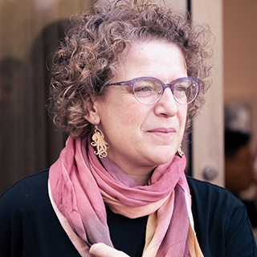

Invited Talks

Emily M. Bender
Professor, University of Washington
Website
Emily M. Bender is a Professor of Linguistics and an Adjunct Professor in the School of Computer Science and the Information School at the University of Washington, where she has been on the faculty since 2003. Her research interests include multilingual grammar engineering, computational semantics, and the societal impacts of language technology. She is the co-author of recent influential papers such as Climbing towards NLU: On Meaning, Form, and Understanding in the Age of Data (ACL 2020) and On the Dangers of Stochastic Parrots: Can Language Models Be Too Big? ü¶ú(FAcct 2021). In 2022 she was elected as a Fellow of the American Association for the Advancement of Science (AAAS).

Lilian Wanzare
Lecturer, Maseno University, Kenya
Website
Lilian Wanzare is a Lecturer at the department of Computer Science, School of Computing and Informatics, Maseno University, Kenya. She obtained her PhD in Computational Linguistics from Saarland University Germany. Her research interests touch on knowledge acquisition, supervised and semi-supervised learning and natural language processing, particularly collecting and annotating data for building NLP tools for low-resource languages. She is a consultant providing solutions to various natural language processing challenges and is passionate about building machine learning solutions to solve local problems.
Anne Lauscher
Professor, University of Hamburg, Germany
Website
Anne Lauscher (Ààan…ô Ààla äÃØ É…ê, she/her) is Associate Professor of Data Science at the University of Hamburg, where her research group investigates Conversational Artificial Intelligence (AI) systems with a focus on fair, inclusive, and sustainable communication.
Before, she was a Postdoctoral Researcher in the Natural Language Processing group at Bocconi University (Milan, Italy) where she was working on introducing demographic factors into language processing systems with the aim of improving algorithmic performance and system fairness. She obtained her Ph.D. from the Data and Web Science group at the University of Mannheim (Germany), where her research focused on the interplay between language representations and computational argumentation. During her studies, she conducted research internships at and became an independent research contractor for Grammarly Inc. (New York City, U.S.) and for the Allen Institute for Artificial Intelligence (Seattle, U.S.). Her research gets regularly published at international top-tier Natural Language Processing (e.g., ACL, EMNLP, etc.) and Artificial Intelligence (e.g., AAAI) venues and has been recognized with multiple awards. In 2022, she was nominated for the Dissertation Award of the German Informatics Society and named as one of the "100 Brilliant Women in AI Ethics for 2023".